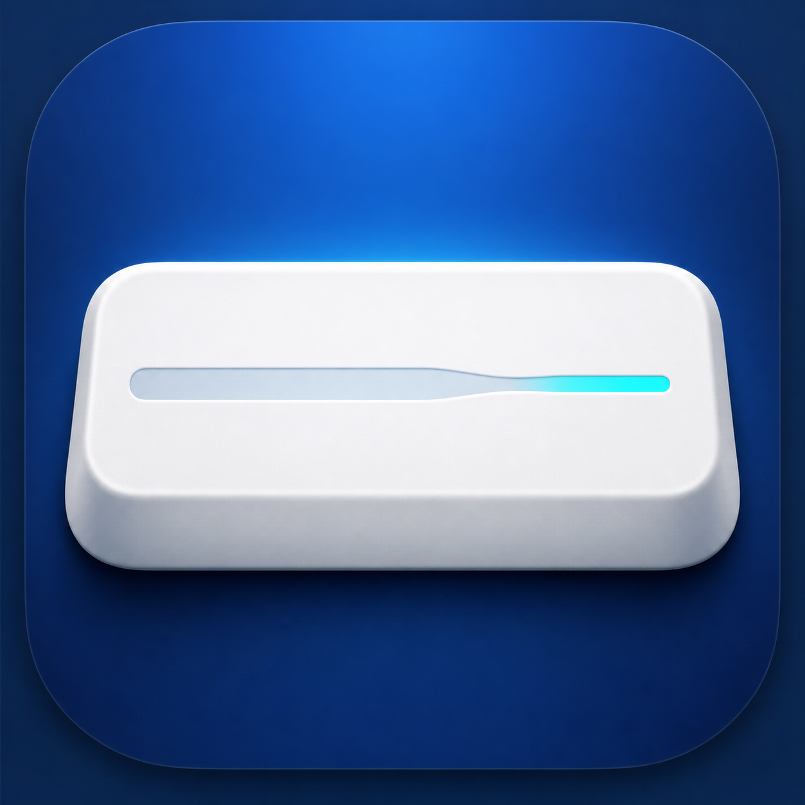

入力内容を記録しません
ネットワーク通信なし。キー入力の内容を保存・送信しません。

HANKAKU SPACE FOR MAC
入力モードを切り替える小さな手間を、静かになくす。
Macのメニューバーに常駐する、無料のシンプルなアプリです。
macOS 26以降・Apple Silicon
バージョン 1.0.0
日本語入力中だけ変換。英数入力や修飾キー付きSpaceには介入しません。
ネットワーク通信なし。キー入力の内容を保存・送信しません。
メニューバーから変換をいつでも切り替えられます。
MIT Licenseでソースコードを公開しています。
FEATURES
普通のSpaceを半角スペースへ変換します。英数入力中は何も変えません。
メニューバーのアイコンから、変換をその場でON／OFFできます。
有効、無効、権限なしをメニューバーの表示で確認できます。
Shift、Command、Option、Control、Fn付きSpaceは変換しません。
INSTALL
ダウンロードしたHankakuSpace.dmgをダブルクリックします。
Hankaku SpaceをApplicationsフォルダへドラッグします。
初回起動時に、システム設定からアクセシビリティ権限を許可します。
FAQ
はい。Hankaku Spaceは無料で利用できるオープンソースアプリです。
収集されません。ネットワーク通信を行わず、入力内容を保存・送信しません。
現在のバージョンはApple Silicon搭載Mac（M1以降）専用です。
アクセシビリティ一覧から古いHankaku Spaceを削除し、Applicationsにある現在のアプリを追加し直してください。
HANKAKU SPACE 1.0.0